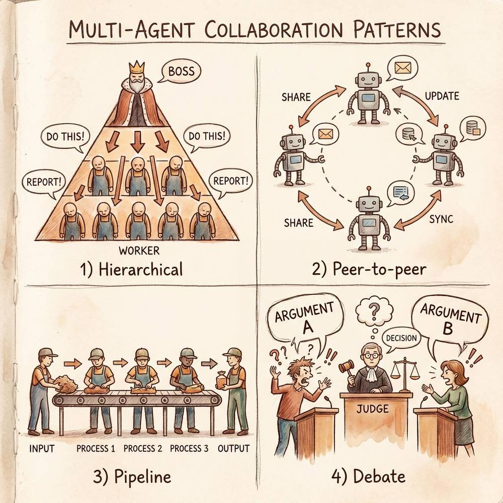
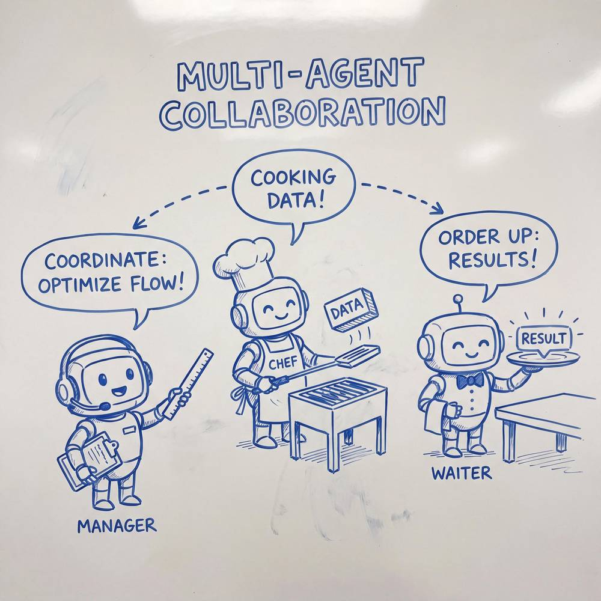
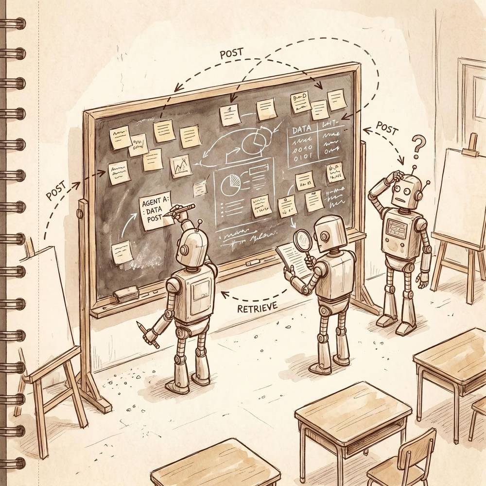

第五章：Multi-Agent 系统（多智能体协作）
AI Agent 全面学习指南 · 第五章
在前面的章节中，我们已经了解了单个 Agent 的构成——感知、推理、规划、记忆与工具调用。但现实世界中的许多复杂任务，远非一个 Agent 能够独立胜任。正如一个人无法同时担任厨师、服务员、收银员和采购员来经营一家餐馆，复杂的 AI 任务也需要多个 Agent 分工协作。本章将深入探讨 Multi-Agent 系统（MAS，多智能体系统）的原理、协作模式、设计模式以及实际应用。
5.1 什么是 Multi-Agent 系统
5.1.1 定义
Multi-Agent 系统（Multi-Agent System, MAS） 是由两个或多个自主智能体（Agent）组成的系统，这些 Agent 在一个共享的环境中运行，通过相互通信、协调与协作来完成单个 Agent 难以独立完成的复杂任务。
每个 Agent 都拥有独立的感知能力、决策能力和行动能力，它们可以有各自不同的目标、知识库和技能集。系统的整体智能涌现于多个 Agent 之间的交互，而非集中式地编码在某个中心控制器中。
用更形式化的方式描述，一个 Multi-Agent 系统通常包含以下要素：
- Agent 集合：$\{A_1, A_2, ..., A_n\}$，每个 Agent 具有独立的能力与角色定义
- 环境（Environment）：所有 Agent 共享的工作空间，包括数据、状态和资源
- 通信机制（Communication）：Agent 之间交换信息的协议和通道
- 协调机制（Coordination）：确保多个 Agent 行动一致、避免冲突的规则和策略
- 任务（Task）：需要多个 Agent 共同完成的目标
5.1.2 为什么需要 Multi-Agent 系统
单 Agent 系统固然简洁，但面对真正复杂的现实任务时，会遇到以下瓶颈：
1. 分工专业化（Specialization）
一个 Agent 不可能精通所有领域。就像一家医院需要内科、外科、放射科、药剂科等不同专科的医生协作，复杂的 AI 任务也需要具备不同专业能力的 Agent。一个擅长代码编写的 Agent 不一定擅长 UI 设计；一个擅长数据分析的 Agent 不一定擅长文案写作。将任务拆分给多个专业化的 Agent，每个 Agent 聚焦于自己最擅长的领域，整体效果远优于一个"万能但平庸"的通才 Agent。
2. 并行加速（Parallelism）
许多复杂任务可以被分解为多个可并行执行的子任务。例如在生成一份市场研究报告时，数据收集、竞品分析、用户调研、趋势预测等子任务可以由不同的 Agent 同时进行，大幅缩短整体耗时。单 Agent 只能串行处理，而 Multi-Agent 系统天然支持并行执行。
3. 鲁棒容错（Robustness）
在单 Agent 系统中，如果该 Agent 出错或宕机，整个系统就会瘫痪。Multi-Agent 系统具备天然的冗余性——如果某个 Agent 失败，其他 Agent 可以接管它的工作，或者系统可以降级运行。这种分布式架构提供了更高的容错能力和系统可靠性。
4. 可扩展性（Scalability）
当任务规模增大时，单 Agent 的能力很快会达到上限（上下文窗口限制、推理能力瓶颈等）。Multi-Agent 系统可以通过增加 Agent 数量来水平扩展处理能力，就像一家公司可以通过招聘新员工来应对业务增长一样。
5.1.3 类比：一个人开餐馆 vs 一个团队
想象你要独自经营一家餐馆：
| 角色 | 一个人做所有事 | 一个团队分工协作 |
|---|---|---|
| 采购 | 你要早起去市场买菜 | 专职采购员负责食材供应链 |
| 烹饪 | 你要在厨房做菜 | 主厨和厨师团队高效出餐 |
| 服务 | 你要跑出去招待客人 | 服务员团队照顾每位顾客 |
| 收银 | 你还要回去结账 | 收银员处理所有支付 |
| 管理 | 你要统筹一切 | 经理协调各环节 |
| 结果 | 手忙脚乱，顾客体验差 | 各司其职，高效运转 |
这就是 Multi-Agent 系统的核心思想——让正确的 Agent 做正确的事。每个 Agent 专注于自己的职责，通过有效的协调机制实现整体目标。
5.2 多智能体协作模式
Multi-Agent 系统中，Agent 之间的协作关系可以有不同的组织形式。以下是三种最经典的协作模式：
5.2.1 分层式（Hierarchical）
核心思想：存在一个（或多个层级的）"管理者 Agent"（Orchestrator / Supervisor），负责接收任务、分解任务并分配给下级 Agent。下级 Agent 完成子任务后将结果汇报给管理者，由管理者进行整合与最终决策。
结构示意：
[总管理者 Agent]
/ | \
[Agent A] [Agent B] [Agent C]
|
[Agent B1] [Agent B2]特点：
- 管理者拥有全局视野，负责任务规划和分配
- 下级 Agent 只需关注自己的子任务
- 信息流自上而下（任务分配）和自下而上（结果汇报）
- 适合目标明确、可清晰分解的任务
类比：这就像一家公司的 CEO → 部门总监 → 部门员工的管理结构。CEO 制定战略目标，总监分解为部门目标，员工执行具体任务。
5.2.2 对等式（Peer-to-Peer / Collaborative）
核心思想：所有 Agent 地位平等，没有固定的"管理者"。Agent 之间通过协商、投票或共识机制来决定任务分配和决策。每个 Agent 都可以发起请求、提供帮助或参与讨论。
结构示意：
[Agent A] ⟷ [Agent B]
⟷ ⟷
[Agent C] ⟷ [Agent D]特点：
- 去中心化，没有单点故障
- Agent 之间自由通信和协商
- 决策通过共识达成
- 适合探索性、创意性任务
类比：这就像一个扁平化的创业团队或圆桌会议，每个人都可以发言、提议，决策通过讨论达成。
5.2.3 竞争式（Competitive / Market-Based）
核心思想：Agent 之间存在竞争关系。多个 Agent 可以同时尝试完成同一任务，最终选择最优结果；或者通过"竞标"机制，让最有能力的 Agent 获得任务执行权。
结构示意：
[任务发布]
/ | \
[Agent A][Agent B][Agent C]
方案1 方案2 方案3
\ | /
[评估/选择最优]特点：
- 通过竞争提升结果质量
- 自然选择最有能力的 Agent
- 可能存在资源浪费（多个 Agent 做同一件事）
- 适合质量要求高、需要多方案比较的场景
类比：这就像公司的项目竞标——多个供应商提交方案，甲方选择最优的。
三种模式对比
| 维度 | 分层式 | 对等式 | 竞争式 |
|---|---|---|---|
| 组织结构 | 树状层级 | 网状平等 | 竞标/淘汰 |
| 决策方式 | 管理者统一决策 | 共识/协商 | 择优录取 |
| 通信模式 | 上下级间通信 | 任意节点间通信 | 提交-评审 |
| 容错能力 | 管理者是单点风险 | 较强，无单点 | 较强，冗余执行 |
| 适用场景 | 流程明确的任务 | 创意探索类任务 | 质量敏感类任务 |
| 资源效率 | 高 | 中 | 较低（冗余计算） |
| 可扩展性 | 层级越深越复杂 | 通信开销增大 | 线性增加 |
| 公司类比 | 传统企业科层制 | 扁平化创业公司 | 外包竞标市场 |
实践建议：现实中的 Multi-Agent 系统通常是混合模式——在顶层使用分层式进行任务编排，在同级 Agent 之间使用对等式进行协商，在某些关键决策点使用竞争式来保证质量。

「图解：四种协作模式 —— 分层式、对等式、流水线式、辩论审核式」

5.3 通信协议与消息传递
Agent 之间如何传递信息，是 Multi-Agent 系统设计的核心问题之一。好的通信机制可以让协作顺畅高效，不良的通信设计则会导致信息丢失、冲突和混乱。
5.3.1 直接消息（Direct Messaging）
机制：Agent A 直接向 Agent B 发送消息，点对点通信。
特点：
- 通信延迟低，效率高
- 需要发送方明确知道接收方是谁
- 适合两个 Agent 之间的紧密协作
类比：这就像同事之间的 私聊/一对一对话。你知道找谁解决问题，直接发消息给对方。
消息格式示例：
{
"from": "ResearchAgent",
"to": "WriterAgent",
"type": "task_result",
"content": {
"topic": "2025年AI市场趋势",
"data": "...(研究数据)...",
"confidence": 0.92
},
"timestamp": "2026-04-18T10:30:00Z"
}5.3.2 广播（Broadcast）
机制：Agent 将消息发送给系统中的所有其他 Agent，或某个特定群组的所有成员。
特点：
- 一对多通信
- 所有相关方都能收到信息
- 可能产生信息冗余——很多接收方并不需要这条消息
- 适合状态更新、系统公告等场景
类比：这就像公司里的 群发邮件或全员公告。当有重要通知时，发给所有人确保信息覆盖。
5.3.3 黑板系统（Blackboard System）
机制：系统维护一个共享的"黑板"（全局数据存储空间）。Agent 可以向黑板写入信息，也可以从黑板读取信息。Agent 不直接与其他 Agent 通信，而是通过黑板间接交换数据。

特点：
- Agent 之间完全解耦
- 通信是异步的
- 天然支持多读多写
- 需要冲突解决机制（多个 Agent 同时修改同一数据）
- 适合松耦合、多步骤递进的协作
类比：这就像一块 实体白板/共享文档。团队成员把自己的发现写在白板上，其他人看到后可以在此基础上继续工作，不需要面对面沟通。
黑板系统工作流：
Agent A 写入 → [黑板: 市场数据已收集] ← Agent B 读取
Agent B 写入 → [黑板: 分析报告已生成] ← Agent C 读取
Agent C 写入 → [黑板: 最终摘要已完成] ← Agent D 读取5.3.4 消息队列（Message Queue）
机制：Agent 将消息发送到一个中间队列（如先进先出队列、优先级队列等），其他 Agent 从队列中消费消息。消息队列充当了 Agent 之间的缓冲层。
特点：
- 异步解耦，发送方和接收方不需要同时在线
- 支持负载均衡——多个 Agent 可以从同一队列消费
- 消息可持久化，不会丢失
- 适合高吞吐、需要可靠投递的场景
类比：这就像公司内部的 工单系统/任务看板。有人提交工单（消息入队），专人领取处理（消息出队），即使提交人下班了，工单依然在那里等待处理。
通信方式对比
| 通信方式 | 耦合度 | 实时性 | 复杂度 | 适用场景 | 团队沟通类比 |
|---|---|---|---|---|---|
| 直接消息 | 高 | 高 | 低 | 点对点紧密协作 | 私聊、面对面交流 |
| 广播 | 中 | 高 | 中 | 全局状态通知 | 群发邮件、全员会议 |
| 黑板系统 | 低 | 中 | 中 | 松耦合多步协作 | 共享白板、Wiki |
| 消息队列 | 低 | 低 | 高 | 高可靠异步处理 | 工单系统、任务看板 |
5.4 角色分工与任务编排
理论讲完了，让我们通过一个完整的实例来看看 Multi-Agent 系统是如何运作的。
案例：自动化研究报告生成
任务目标：自动生成一份关于"2026年大语言模型发展趋势"的深度研究报告。
四个 Agent 的角色定义
1. 项目经理 Agent（Orchestrator）
- 职责：接收用户需求，分解任务，分配给各专业 Agent，跟踪进度，整合最终成果
- 能力：任务规划、进度管理、质量把控
- System Prompt 核心："你是一个资深的项目经理，负责将复杂的研究任务分解为可执行的子任务，并协调团队成员的工作……"
2. 研究员 Agent（Researcher）
- 职责：搜索和收集相关资料，整理关键数据和事实
- 能力：联网搜索、文献检索、数据提取、事实核查
- 可用工具：Web 搜索 API、学术论文数据库、新闻聚合服务
- System Prompt 核心："你是一个严谨的研究员，擅长从海量信息中提取关键事实和数据……"
3. 分析师 Agent（Analyst）
- 职责：对收集到的数据进行深度分析，提炼洞察，做出趋势判断
- 能力：数据分析、逻辑推理、趋势预测、竞品对比
- 可用工具：数据分析库、图表生成工具
- System Prompt 核心："你是一个资深的行业分析师，擅长从数据中发现模式、提炼洞察……"
4. 撰稿人 Agent（Writer）
- 职责：将分析结果撰写为结构清晰、语言流畅的研究报告
- 能力：长文写作、排版优化、风格把控
- 可用工具：文档生成工具、Markdown 编辑器
- System Prompt 核心："你是一个专业的研究报告撰稿人，擅长将复杂的技术分析转化为清晰易读的文字……"
协作流程
用户需求："生成一份关于2026年大语言模型发展趋势的深度报告"
│
▼
┌───────────────────────────────┐
│ ① 项目经理 Agent 接收任务 │
│ 分解为以下子任务： │
│ T1: 技术进展调研 │
│ T2: 市场格局调研 │
│ T3: 应用场景调研 │
│ T4: 政策法规调研 │
└───────────────┬───────────────┘
│
┌───────────┼───────────┐
▼ ▼ ▼
┌─────────┐┌─────────┐┌─────────┐
│研究员 ││研究员 ││研究员 │ ② 并行调研
│执行 T1 ││执行 T2 ││执行 T3/T4│
└────┬────┘└────┬────┘└────┬────┘
│ │ │
└──────────┼──────────┘
▼
┌───────────────────────────────┐
│ ③ 项目经理 Agent 汇总资料 │
│ 进行质量检查和查漏补缺 │
└───────────────┬───────────────┘
│
▼
┌───────────────────────────────┐
│ ④ 分析师 Agent 深度分析 │
│ - 提炼关键趋势 │
│ - 对比各模型能力 │
│ - 预测未来发展方向 │
│ - 生成数据图表 │
└───────────────┬───────────────┘
│
▼
┌───────────────────────────────┐
│ ⑤ 撰稿人 Agent 撰写报告 │
│ - 确定报告结构 │
│ - 撰写各章节内容 │
│ - 插入图表和引用 │
│ - 优化语言和格式 │
└───────────────┬───────────────┘
│
▼
┌───────────────────────────────┐
│ ⑥ 项目经理 Agent 最终审核 │
│ - 检查完整性和准确性 │
│ - 审核格式和可读性 │
│ - 必要时退回修改 │
│ - 交付最终报告 │
└───────────────────────────────┘这个案例清晰地展示了 Multi-Agent 系统的核心优势：专业分工使每个 Agent 聚焦所长，并行执行加速了数据收集阶段，层级协调保证了整体质量，流水线处理使得从数据到洞察到报告的转化清晰有序。
5.5 多 Agent 系统的设计模式
在实际构建 Multi-Agent 系统时，根据任务特点的不同，可以选择以下四种经典设计模式。
5.5.1 串行流水线（Sequential Pipeline）
模式描述：Agent 按固定顺序依次执行，前一个 Agent 的输出作为后一个 Agent 的输入，形成一条"流水线"。
[Agent A] → [Agent B] → [Agent C] → [Agent D] → 最终输出
(收集) (清洗) (分析) (报告)适用场景：
- 任务有明确的先后依赖关系
- 每个阶段的输入输出格式清晰
- 例如：数据采集 → 数据清洗 → 数据分析 → 报告生成
优点：
- 逻辑清晰，易于理解和调试
- 每个 Agent 职责单一
- 中间结果可以检查和缓存
缺点：
- 无法并行，整体耗时是所有步骤之和
- 任何一步出错会阻塞后续流程
- 不适合步骤间无固定顺序的任务
5.5.2 并行扇出（Parallel Fan-Out / Fan-In）
模式描述：一个 Agent（通常是编排器）将任务拆分为多个独立的子任务，分发给多个 Agent 并行执行，然后收集所有结果进行汇总。
┌→ [Agent B1] ─┐
[Agent A] 分发 → ├→ [Agent B2] ─┤ → [Agent C] 汇总
└→ [Agent B3] ─┘适用场景：
- 子任务之间相互独立
- 需要缩短整体处理时间
- 例如：多渠道数据采集、多语言翻译、多角度分析
优点：
- 大幅缩短总体耗时（取决于最慢的子任务）
- 天然支持水平扩展
- 子任务失败不影响其他任务
缺点：
- 需要处理结果汇总和冲突解决
- 分发和汇总本身有开销
- 子任务间不能有依赖关系
5.5.3 辩论审核（Debate & Review）
模式描述：多个 Agent 对同一问题给出各自的回答或方案，然后通过一个"评审 Agent"或多轮辩论来选择或综合出最优结果。
[Agent A] ──答案1──┐
[Agent B] ──答案2──┼→ [裁判 Agent] → 最终答案
[Agent C] ──答案3──┘
↑ │
└──反馈/修改要求──────┘ (可多轮迭代)适用场景：
- 任务没有唯一正确答案，需要多角度思考
- 对结果质量要求极高
- 需要减少单 Agent 的偏见和幻觉
- 例如：代码审查、方案评估、事实核查
优点：
- 有效减少单一 Agent 的偏见和错误
- 多角度思考提升答案质量
- 辩论过程本身产生有价值的推理链
缺点：
- 计算成本高（多个 Agent 做同一件事）
- 裁判 Agent 的质量成为瓶颈
- 可能出现"过度辩论"导致效率低下
5.5.4 层级委托（Hierarchical Delegation）
模式描述：顶层 Agent 将任务委托给中层 Agent，中层 Agent 可以进一步将子任务委托给更下层的 Agent，形成多级委托链。每一层 Agent 都只与直接上下级交互。
[CEO Agent]
/ \
[VP Agent A] [VP Agent B]
/ \ |
[工人1] [工人2] [工人3]适用场景：
- 任务极其复杂，需要多层分解
- 不同层级需要不同粒度的决策
- 例如：大型软件项目管理、企业级业务流程自动化
优点：
- 支持非常复杂的任务分解
- 每层 Agent 只处理适当粒度的问题
- 上层 Agent 不需要关心底层实现细节
缺点：
- 层级越深，通信延迟越大
- 错误传播链更长
- 系统整体复杂度高
四种模式对比
| 设计模式 | 并行度 | 结果质量 | 系统复杂度 | 资源消耗 | 典型应用 |
|---|---|---|---|---|---|
| 串行流水线 | 无 | 中 | 低 | 低 | ETL 数据处理 |
| 并行扇出 | 高 | 中 | 中 | 中 | 多源数据采集 |
| 辩论审核 | 中 | 高 | 中 | 高 | 代码审查、决策 |
| 层级委托 | 高 | 高 | 高 | 中高 | 大型项目管理 |
5.6 典型应用案例
5.6.1 软件开发团队
Multi-Agent 系统在软件开发领域展现出了巨大的潜力。一个完整的 AI 软件开发团队通常包括以下角色：
Agent 角色配置：
| Agent 角色 | 职责 | 核心能力 |
|---|---|---|
| 产品经理 Agent | 分析需求、撰写用户故事、定义验收标准 | 需求理解、用户思维 |
| 架构师 Agent | 技术选型、系统设计、接口定义 | 架构设计、技术广度 |
| 开发者 Agent | 编写代码、实现功能 | 代码生成、Bug 修复 |
| 测试 Agent | 编写测试用例、执行测试、报告缺陷 | 测试策略、边界分析 |
| 代码审查 Agent | 审查代码质量、安全性、性能 | 代码分析、最佳实践 |
| DevOps Agent | 构建部署、监控告警 | CI/CD、基础设施 |
协作流程：
- 用户提出需求："开发一个用户登录功能"
- 产品经理 Agent 将需求转化为详细的用户故事和验收标准
- 架构师 Agent 根据用户故事设计技术方案（API 接口、数据模型、认证流程）
- 开发者 Agent 根据技术方案编写前端和后端代码
- 代码审查 Agent 审查代码，提出安全性建议（如密码哈希、SQL 注入防护）
- 开发者 Agent 根据审查意见修改代码
- 测试 Agent 编写并执行单元测试、集成测试
- DevOps Agent 将通过测试的代码构建部署到测试环境
这种 Agent 团队已经在 ChatDev、MetaGPT 等开源项目中得到了验证，能够自动完成从需求到可运行代码的全流程。
5.6.2 内容创作团队
内容创作是另一个非常适合 Multi-Agent 协作的领域。
Agent 角色配置：
| Agent 角色 | 职责 | 核心能力 |
|---|---|---|
| 选题策划 Agent | 热点追踪、选题挖掘、角度设计 | 趋势感知、创意发散 |
| 素材搜集 Agent | 资料收集、数据核实、案例整理 | 信息检索、事实核查 |
| 写作 Agent | 文章撰写、故事叙述 | 长文写作、风格把控 |
| 编辑 Agent | 内容审校、结构优化、标题优化 | 编辑功底、读者思维 |
| SEO 优化 Agent | 关键词分析、SEO 优化建议 | SEO 策略、流量分析 |
| 配图 Agent | 生成配图、设计封面 | 图片生成、视觉审美 |
实际工作流：
- 选题策划 Agent 监控行业热点，生成每周选题列表，包含预期阅读量分析
- 确定选题后，素材搜集 Agent 全网收集相关资料（论文、新闻、案例、数据），整理成结构化的素材包
- 写作 Agent 基于素材包撰写初稿，遵循预设的写作风格指南
- 编辑 Agent 审阅初稿，从结构、逻辑、语言等维度提出修改建议，必要时退回给写作 Agent 修改
- SEO 优化 Agent 分析文章的关键词布局，优化标题和摘要以提升搜索排名
- 配图 Agent 根据文章内容生成合适的配图和封面图
整个流程可以全自动运行，也可以在关键节点设置人工审核。
5.6.3 投资分析团队
金融投资领域的分析决策涉及多个维度，非常适合 Multi-Agent 协作。
Agent 角色配置：
| Agent 角色 | 职责 | 核心能力 |
|---|---|---|
| 宏观分析师 Agent | 宏观经济环境分析、货币政策追踪 | 经济学知识、政策解读 |
| 行业分析师 Agent | 行业趋势、竞争格局、供需分析 | 行业研究、产业链分析 |
| 财务分析师 Agent | 财报解读、财务建模、估值分析 | 财务分析、估值模型 |
| 情绪分析师 Agent | 市场情绪监测、舆情分析、社交媒体追踪 | NLP 分析、情绪识别 |
| 风控 Agent | 风险评估、压力测试、仓位建议 | 风险管理、量化模型 |
| 决策 Agent | 综合所有分析，生成投资建议 | 综合判断、决策框架 |
协作场景——分析一只股票是否值得投资：
- 宏观分析师 Agent：分析当前经济周期、利率环境、通胀水平对该行业的影响
- 行业分析师 Agent：分析该公司所在行业的增长空间、竞争格局、护城河
- 财务分析师 Agent：深度解读最近几个季度的财报，计算 PE/PB/ROE 等关键指标，构建 DCF 估值模型
- 情绪分析师 Agent：监测该股票相关的新闻报道、社交媒体讨论、分析师评级变化
- 风控 Agent：评估最大回撤风险、Beta 值、与投资组合的相关性
- 决策 Agent：综合以上五位分析师的报告，权衡利弊，给出最终的投资建议（买入/持有/卖出）及理由
这种多维度的分析框架远比单 Agent 的"一把梭"分析更全面、更可靠。
5.6.4 客服团队
智能客服是 Multi-Agent 系统最早落地的场景之一。
Agent 角色配置：
| Agent 角色 | 职责 | 核心能力 |
|---|---|---|
| 路由 Agent | 意图识别、工单分类、Agent 分配 | 分类、路由决策 |
| FAQ Agent | 回答常见问题 | 知识库检索、标准答案 |
| 技术支持 Agent | 处理技术类问题，指导排障 | 技术知识、诊断推理 |
| 订单处理 Agent | 查询订单、处理退换货 | 系统操作、流程执行 |
| 情绪安抚 Agent | 识别用户情绪、安抚不满 | 情感识别、共情沟通 |
| 升级 Agent | 处理复杂投诉、人工坐席转接 | 冲突处理、升级决策 |
协作流程：
- 用户发起咨询："我三天前买的耳机坏了，而且快递还把盒子压坏了，太气人了！"
- 路由 Agent 分析意图：产品质量问题 + 物流损坏投诉 + 负面情绪。决定同时调度情绪安抚 Agent 和订单处理 Agent。
- 情绪安抚 Agent 首先介入："非常抱歉给您带来了不好的体验，我能理解您的心情……"
- 订单处理 Agent 同步查询订单信息，确认购买时间、产品型号，判断在售后保障范围内
- 订单处理 Agent 给出解决方案：免费换新 + 赠送优惠券补偿
- 如果用户对方案不满意，升级 Agent 介入，提供更高权限的解决方案或转人工处理
这种多 Agent 客服系统的优势在于：路由精准——用户不需要在菜单中选择；并行处理——情绪安抚和问题解决同步进行；专业对口——不同类型的问题由对应的专家 Agent 处理。
5.7 多 Agent 系统的挑战
尽管 Multi-Agent 系统在理论和实践中展现出了巨大的潜力，但要构建一个真正可靠、高效的多 Agent 系统，仍然面临诸多挑战。
5.7.1 协调开销（Coordination Overhead）
问题描述：Agent 之间的通信和协调本身需要消耗时间和资源。当 Agent 数量增加时，通信开销可能呈指数级增长。
- 通信爆炸：N 个 Agent 之间的全连接通信需要 N×(N-1)/2 条通道。10 个 Agent 就需要 45 条，100 个需要 4950 条。
- 等待与同步：并行 Agent 的完成时间取决于最慢的那个，快的 Agent 需要等待。
- 编排器瓶颈：在分层式架构中，管理者 Agent 可能成为性能瓶颈——所有任务的分配和结果的汇总都经过它。
缓解策略：
- 限制通信拓扑，避免全连接
- 使用异步通信减少等待
- 设计合理的超时和降级机制
- 必要时使用多级编排器分散压力
5.7.2 一致性问题（Consistency）
问题描述：多个 Agent 同时工作时，如何保证它们对共享信息的理解是一致的？如何处理相互矛盾的结果？
- 知识不一致：不同 Agent 可能基于不同的数据源或不同时间点的数据做出决策，导致结论矛盾。
- 目标冲突：不同 Agent 的局部目标可能与系统整体目标不一致。例如"速度优化 Agent"和"安全审查 Agent"之间天然存在张力。
- 状态同步：当一个 Agent 修改了共享状态，其他 Agent 如何及时感知这一变化？
缓解策略：
- 建立统一的数据源和知识库
- 引入"仲裁 Agent"解决冲突
- 实现版本控制和乐观锁机制
- 明确定义各 Agent 的权限边界
5.7.3 调试困难（Debugging Difficulty）
问题描述：Multi-Agent 系统的行为是涌现的——系统的整体行为难以从单个 Agent 的行为直接推导出来。这使得定位和修复问题变得极其困难。
- 因果链追踪：当最终输出有误时，是哪个 Agent 在哪一步出了什么问题？如果 Agent A 给了错误的数据，Agent B 基于错误数据做了错误分析，Agent C 基于错误分析写了错误报告——根因在哪里？
- 不确定性：基于 LLM 的 Agent 本身具有随机性，同样的输入可能产生不同的输出，导致问题难以复现。
- 交互复杂性：Agent 之间的交互可能产生意想不到的涌现行为，包括死循环（Agent A 和 Agent B 反复互相要求修改）、资源竞争等。
缓解策略：
- 实现详细的日志记录——记录每个 Agent 的输入、输出、推理过程
- 构建可视化的工作流监控面板
- 引入"链路追踪"（Tracing）机制，类似分布式系统的 Distributed Tracing
- 设计"可回放"的执行机制，支持从任意步骤重新运行
- 为每个 Agent 建立独立的评估基准（Benchmark）
5.7.4 成本控制（Cost Management）
问题描述：Multi-Agent 系统的运行成本远高于单 Agent。每个 Agent 的每次调用都会消耗 API 费用（Token 成本），多个 Agent 的长时间交互可能导致成本失控。
- Token 消耗倍增：假设单 Agent 完成任务需要 10K Token，5 个 Agent 的系统可能消耗 50K-100K Token（考虑通信开销）。
- 无效交互：Agent 之间的冗余讨论、反复修改都会产生额外成本。
- 模型选择困境：使用最强模型（如 GPT-4、Claude 3.5 Sonnet）成本高但质量好，使用较弱模型成本低但可能导致更多的交互轮次。
缓解策略：
- 模型分级：关键决策 Agent 用强模型，简单执行 Agent 用弱模型或专用小模型
- 缓存机制：相同或相似的查询结果可以缓存复用
- 预算控制：为每个任务设置 Token 预算上限，超过预算则降级处理
- 交互轮次限制：限制 Agent 之间的最大交互轮次，防止无限循环
- 批处理优化：将多个小请求合并为一个大请求，减少 API 调用次数
挑战总结
| 挑战 | 核心矛盾 | 关键风险 | 首要缓解手段 |
|---|---|---|---|
| 协调开销 | Agent 越多，协调越复杂 | 性能下降 | 限制通信拓扑、异步通信 |
| 一致性 | 分布式决策 vs 全局一致 | 结果矛盾 | 统一数据源、仲裁机制 |
| 调试困难 | 涌现行为难以预测 | 问题难定位 | 全链路追踪、可回放机制 |
| 成本控制 | 质量 vs 成本的权衡 | 预算超支 | 模型分级、预算上限 |
本章小结
Multi-Agent 系统代表了 AI Agent 技术的一个重要发展方向。通过让多个专业化的 Agent 分工协作，我们可以解决单个 Agent 无法胜任的复杂任务。本章我们学习了：
- Multi-Agent 系统的定义与价值：分工、并行、鲁棒、扩展四大优势
- 三种协作模式：分层式、对等式、竞争式，以及它们的适用场景
- 四种通信机制：直接消息、广播、黑板系统、消息队列
- 任务编排实例：以研究报告生成为例的四 Agent 协作全流程
- 四种设计模式：串行流水线、并行扇出、辩论审核、层级委托
- 四大应用案例：软件开发、内容创作、投资分析、智能客服
- 四大核心挑战：协调开销、一致性、调试困难、成本控制
下一章预告：第六章将深入探讨 Agent 的记忆系统——短期记忆、长期记忆、工作记忆的设计与实现，以及如何让 Agent 在长时间交互中保持上下文连贯和知识积累。
AI Agent 全面学习指南 · 第五章 · Multi-Agent 系统（多智能体协作）
💡 觉得有帮助？欢迎关注我们
获取更多 AI Agent 学习资料与行业动态
 微信公众号
微信公众号
 小红书
小红书